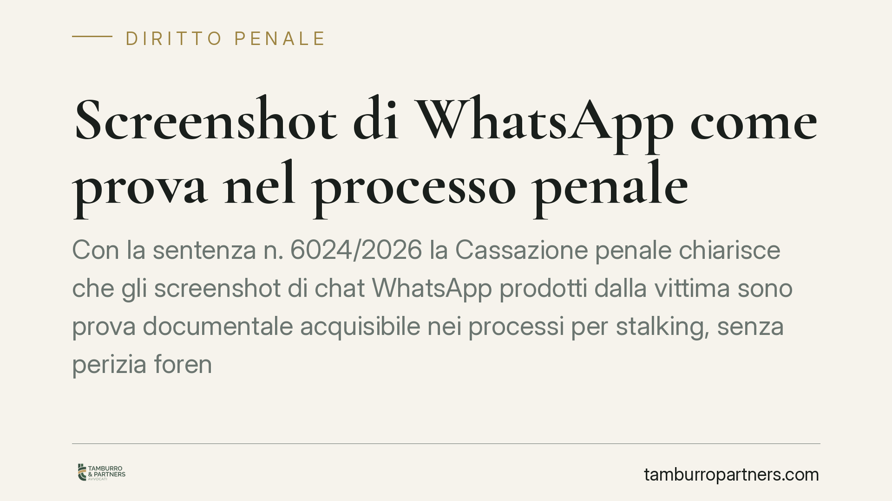

Screenshot di WhatsApp come prova nel processo penale
Con la sentenza n. 6024/2026 la Cassazione penale chiarisce che gli screenshot di chat WhatsApp prodotti dalla vittima sono prova documentale acquisibile nei processi per stalking, senza perizia forense né sequestro del telefono, salvo prova concreta di manipolazione. Una decisione che tocca chiunque abbia a che fare con conversazioni digitali in giudizio.

Il caso e il principio affermato
La Corte di Cassazione Penale, con la sentenza n. 6024/2026, si è pronunciata sul valore probatorio degli screenshot di conversazioni WhatsApp prodotti dalla persona offesa in un procedimento per atti persecutori (art. 612-bis c.p.).
Il principio è netto: le immagini delle chat costituiscono prova documentale e sono acquisibili al processo senza necessità di una perizia informatica preventiva o del sequestro dell'apparecchio da cui provengono. La verifica tecnica diventa necessaria solo quando emerga un elemento concreto che faccia sospettare una manipolazione, e non per un dubbio meramente astratto.
Inquadramento normativo
Lo screenshot rientra nella nozione ampia di documento di cui all'art. 234 c.p.p., che ammette come prova gli scritti e ogni altra cosa idonea a rappresentare fatti, persone o cose. La chat fotografata è quindi una rappresentazione informatica assimilabile al documento tradizionale.
È opportuno distinguere questa ipotesi da due fattispecie diverse:
- L'intercettazione: secondo un orientamento consolidato di legittimità, la registrazione o la documentazione di un colloquio da parte di chi vi ha preso parte non costituisce intercettazione, ma prova documentale ex art. 234 c.p.p. (orientamento della Cass. sez. pen. sulla registrazione tra presenti; *si consiglia la verifica del riferimento puntuale prima della produzione*). Chi conserva e deposita le proprie conversazioni non capta di nascosto una comunicazione altrui.
- Il sequestro ex art. 254 c.p.p., che riguarda l'acquisizione coattiva di corrispondenza presso terzi (ad esempio il gestore). Non entra in gioco quando è la stessa parte offesa a produrre spontaneamente il materiale.
Marginale, nel caso tipico, è il richiamo all'art. 234-bis c.p.p., che disciplina l'acquisizione di documenti e dati informatici conservati all'estero: si applica in scenari transfrontalieri, non alla chat estratta dal telefono personale della vittima e depositata in Italia.
Il punto debole: l'attendibilità intrinseca
Acquisibilità non significa piena efficacia probatoria. Lo screenshot presenta un limite strutturale: è privo di firma digitale e di valori di hash che ne garantiscano l'integrità, ed è tecnicamente alterabile con comuni strumenti di editing grafico (testo, nomi, date, orari).
Per questa ragione la decisione va letta con precisione: la Corte non attribuisce allo screenshot un valore di prova assoluta, ma lo sottopone al libero convincimento del giudice (art. 192 c.p.p.). Il documento va valutato insieme agli altri elementi del fascicolo: coerenza del contenuto, riscontri esterni, dichiarazioni testimoniali, tabulati.
La difesa dell'imputato conserva quindi uno spazio di contestazione. Ma non basta un'obiezione generica: occorre allegare indizi specifici di falsificazione perché il giudice disponga accertamenti tecnici. In assenza di tali indizi, lo screenshot resta valutabile.
Implicazioni pratiche
Per chi si ritiene vittima di condotte persecutorie, la pronuncia conferma che la documentazione conservata sul proprio telefono ha ingresso in giudizio senza passaggi tecnici obbligati. Questo riduce tempi e costi della fase istruttoria.
Per l'imputato e per chi lo assiste, l'attenzione si sposta sulla qualità della contestazione: individuare eventuali incongruenze, chiedere l'estrazione del dato dalla fonte originaria, valutare l'utilità di una consulenza tecnica di parte.
Per entrambe le posizioni vale una regola di metodo: la solidità della prova dipende dalla sua conservazione integra e dalla capacità di riscontrarla con altri elementi.
Cosa fare in concreto
- Conserva l'originale. Non limitarti allo screenshot: mantieni il messaggio nella app e, ove possibile, esporta la chat in formato integrale con data e ora.
- Documenta il contesto. Salva anche i metadati disponibili, i numeri, l'intestazione della conversazione e ogni riscontro esterno (testimoni, altri canali).
- Non modificare nulla. Qualsiasi ritocco grafico, anche solo per oscurare dati, va evitato o dichiarato: l'alterazione compromette la credibilità dell'intero materiale.
- Valuta una consulenza tecnica. Se contesti l'autenticità di uno screenshot avversario, raccogli indizi concreti di manipolazione prima di chiedere l'accertamento peritale.
- Rivolgiti a un legale prima del deposito. La modalità di produzione incide sull'efficacia probatoria: una valutazione preventiva evita errori difficilmente rimediabili.
Contributo informativo a cura di Tamburro & Partners - Avv. Giuseppe Tamburro. Non costituisce parere legale.
Ogni condominio ha una storia a sé.
Se gestisci un'amministrazione e vuoi un confronto su una specifica questione condominiale, scrivi allo studio. Ti rispondiamo entro un giorno lavorativo.